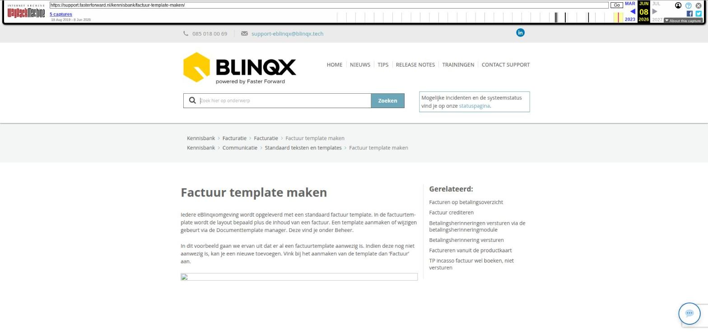

Factuur template maken

Tekstinhoud
Factuur template maken
Iedere eBlinqxomgeving wordt opgeleverd met een standaard factuur template. In de factuurtemplate wordt de layout bepaald plus de inhoud van een factuur. Een template aanmaken of wijzigen gebeurt via de Documenttemplate manager. Deze vind je onder Beheer.
In dit voorbeeld gaan we ervan uit dat er al een factuurtemplate aanwezig is. Indien deze nog niet aanwezig is, kan je een nieuwe toevoegen. Vink bij het aanmaken van de template dan 'Factuur' aan.
Template instellen
Zoek in de documenttemplate manager naar de factuur die gewijzigd dient te worden en klik op de naam om deze te openen. In het volgende scherm zijn velden te wijzigen als naam, omschrijving, pagina eigenschappen en lettertype. Onder aan de pagina worden de blokken van de template weergegeven. Door op de naam of op het wijzigingsicoontje te klikken zal een pop-up zichtbaar worden waarin het betreffende blok kan worden aangepast.
Blokken
Blokken worden gewijzigd/aangemaakt door op de wijzigingsknop te klikken of op het '+ icoon'.
Vervolgens wordt een soortgelijk scherm als onderstaande zichtbaar. Behalve de naam en omschrijving is het van belang aan te geven of het veld statisch of dynamisch is. Een statisch veld houdt in dat de inhoud hiervan vast staat en niet meer te wijzigen is in het dossier. In dit voorbeeld staan er enkele tags in. Een dynamisch veld dient telkens opnieuw te worden gevuld vanuit het dossier, deze kan dan ook niet worden gebruikt voor facturen.
Voor factureren kunnen aparte tags worden gebruikt om bijvoorbeeld de productnaam, facturatie bedrag en totaaltelling op te halen. Open hiervoor het 'inserttagicoon' in de balk boven het tekstveld en klik op het mapje ´Factuur´.
Hierna zullen een aantal nieuwe tags zichtbaar worden. Een tekstuele code tonen voor het factuurnummer kan hiermee ook eenvoudig: deze code kan je toevoegen voor/na de tag die het factuurnummer ophaalt.
Voorbeeld
De blokken zijn in het tabblad 'Voorbeeld' visueel te maken. In een blok kan bijvoorbeeld een afbeelding (logo), adres of kop- en voettekst komen die op alle facturen van toepassing zijn. In dit voorbeeld zijn de blokken nog te verschuiven, na opslaan is dit vastgelegd.
Instellingen
Bovenaan de pagina zijn speciaal voor factuurtemplates ook de tabblad 'Instellingen Factuurregels' en 'Instellingen Factuurspecifatie' gemaakt. Hier kan worden ingesteld hoe zaken als de artikelcode, artikelomschrijving en prijs op de factuur komen te staan. Als bij een uitgedraaide factuur bijvoorbeeld een artikelomschrijving niet zichtbaar is, is dit de eerste plek om te controleren. Het kan namelijk zijn dat het percentage niet voldoende is. In de laatste kolom kunnen deze percentages worden aangepast. Let wel dat alle rijen samen 100% zijn!
Links vink je de gewenste kolommen aan. De volgorde bepaal je door op de pijltjes te klikken. De kolom 'kop' is de naam die je terugziet op de factuur. In de opvolgende kolommen wordt de lay-out bepaald van de factuurregels.
Template koppelen aan betaalwijze
In de module 'Financieel – Stamgegevens – Betalingsprofielen onderhoud' is het mogelijk een factuurtemplate te koppelen aan een betaalwijze.
Na het opslaan van de template is deze klaar voor gebruik.
Laatste update: 15 oktober 2025
Tagged: factuur
Was deze informatie nuttig?
Ja Nee